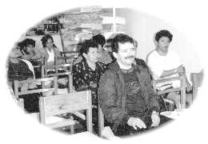
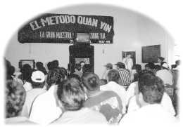

| Un phare dans l'obscurité |
|  |
M. Isauro Tapia Vargas, sous-directeur, tecnico Cereso Tuxpan (au milieu) participant à un séminaire organisé pour le personnel de la prison. |
Il y a peu de temps, le sous-directeur de la prison de Tuxpan, M. Isauro Tapia, a visité le magasin d'un ami pratiquant, où il a lu un prospectus présentant Maître, et Ses enseignements et cela l'a beaucoup intéressé. Peu de temps après, deux amis pratiquants ont organisé deux séminaires vidéo le même jour : le premier à la bibliothèque locale pour le personnel de la prison et le second à la prison de Tuxpan pour les détenus.
M. Tapia, sa secrétaire et un administrateur chargé de l'éducation des prisonniers ont assisté au premier séminaire qui a eu lieu dans la bibliothèque. Le sous-directeur Tapia a exprimé le souhait que tous les détenus puissent commencer une nouvelle vie, pleine de succès, une fois de retour dans la société. L'équipe de travail a partagé des anecdotes sur des détenus qui avaient renoncé à leurs mauvaises habitudes après avoir reçu l'initiation et étaient devenus des membres actifs dans la société après leur libération.
Après la conférence vidéo, les amis pratiquants ont expliqué de manière plus détaillée la méthode Guan Yin avant de servir de succulents plats végétariens au personnel de la prison. M. Tapia, qui supervise également la prison des femmes, a suggéré que les amis pratiquants y donnent des leçons de cuisine végétarienne et a demandé qu'un autre séminaire vidéo soit organisé pour les femmes détenues.
Dans l'après-midi, les amis pratiquants ont tenu un second séminaire dans la prison de Tuxpan. Lorsqu'ils ont distribué des revues, des livrets-échantillons et des friandises, tout le sérieux du séminaire s'est évaporé pour laisser place à une atmosphère amicale et détendue. Après avoir regardé la conférence vidéo de Maître, nombreux sont ceux qui ont demandé à apprendre la Méthode pratique, tout comme le sous-directeur et sa secrétaire. Tous ont eu de bonnes expériences. En réponse aux nombreuses demandes concernant la méditation en groupe, le sous-directeur Tapia a autorisé des amis pratiquants à revenir à la prison une fois par semaine pour montrer des vidéocassettes de Maître et pour y organiser des méditations en groupe.
Il a également présenté une médaille d'éloges pour exprimer sa gratitude à l'Association Internationale du Maître Suprême Ching Hai, en faisant remarquer que ces activités leur avaient apporté une source considérable d'inspiration de la Vérité.
|  | Partager la Vérité avec les détenus de la prison de Tuxpan |